🧬 MicroBioMeta es un paquete de R diseñado para trabajar con datos de metabarcoding. Este tutorial recorre un ejemplo de su uso.
Para este ejemplo usaremos datos secuenciados con el barcode 16S para bacterias y 18S para hongos.
Los datos provienen de:
💻 Cargar los datos
Primero, carguemos el paquete MicroBioMeta:
Carguemos también los demás paquetes que vamos a necesitar:
tidyverse se usa
para todo el manejo de datos y las visualizaciones.
Ahora cargamos los datos y los reformateamos. Este conjunto de datos
fue procesado en QIIME2,
así que sus artefactos .qza deben importarse a R.
Alternativamente, podrías exportar los mismos datos desde
QIIME2 como archivos .txt planos y leerlos
directamente.
En este ejemplo usamos el paquete qiime2R, del
cual read_qza() está adaptada (Licencia MIT, © 2018 Jordan
Bisanz). Para instalarlo:
if (!requireNamespace("devtools", quietly = TRUE)){install.packages("devtools")}
devtools::install_github("jbisanz/qiime2R")Lo cargamos:
library(qiime2R)Primero, carguemos las tablas y la taxonomía de cada conjunto de datos:
bacteria_table <- read_qza("articles/data/table_bacteria.qza")$data %>% as.data.frame()
fungi_table <- read_qza("articles/data/table_fungi.qza")$data %>%
as.data.frame()
taxonomy_bacteria <- read_qza("articles/data/taxonomy_bacteria.qza")$data %>%
as.data.frame() %>% rename(taxonomy = Taxon) %>%
dplyr::select(-Confidence) %>%
column_to_rownames(var = "Feature.ID")
taxonomy_fungi <- read_qza("articles/data/taxonomy_fungi.qza")$data %>% as.data.frame() %>%
rename(taxonomy = Taxon) %>%
dplyr::select(-Consensus) %>%
column_to_rownames(var = "Feature.ID")⚠️ Nota que renombramos la columna Taxon a taxonomy antes de unir estos dos objetos:
colnames(taxonomy_bacteria)## [1] "taxonomy"Ahora, carguemos los metadatos de cada conjunto de datos:
bacteria_metadata <- read.delim("articles/data/metadata_bacterias.txt", check.names = FALSE) %>%
filter(Month == "2")
fungi_metadata <- read.delim("articles/data/metadata_fungis.txt", check.names = FALSE)Ahora filtremos y ordenemos los datos. Es una buena práctica usar tabla y metadatos que contengan la misma información y muestras, y en el mismo orden. Así que en este punto vamos a filtrar las tablas para que coincidan con los metadatos.
Para bacterias:
samples_bac <- bacteria_metadata$SAMPLEID[
bacteria_metadata$SAMPLEID %in% colnames(bacteria_table)]
table_bacteria <- bacteria_table[, samples_bac]
metadata_bacteria <- bacteria_metadata[
bacteria_metadata$SAMPLEID %in% samples_bac, ]y para hongos:
Preprocesamiento de los datos
Las funciones de MicroBioMeta necesitan que los datos
estén en formato biom, con una columna de
taxonomía al final.
Si tus datos no vienen ya en ese formato,
merge_feature_taxonomy() combina una tabla de abundancia y
una tabla de taxonomía en este formato. Mantener la taxonomía como una
columna de la misma tabla permite que la mayoría de las funciones
consulten la identidad taxonómica sin necesitar un objeto aparte.
table_bac <- merge_feature_taxonomy(table = table_bacteria,
taxonomy = taxonomy_bacteria)## Warning in merge_feature_taxonomy(table = table_bacteria, taxonomy =
## taxonomy_bacteria): 83 taxonomy IDs are not present in the table and will be
## excluded from the result.
table_fung <- merge_feature_taxonomy(table = table_fungi,
taxonomy = taxonomy_fungi)## Warning in merge_feature_taxonomy(table = table_fungi, taxonomy =
## taxonomy_fungi): 17 taxonomy IDs are not present in the table and will be
## excluded from the result.⚠️ Nota que esta advertencia reporta cuántos IDs de taxonomía no coincidieron con la tabla de features y fueron excluidos del resultado.
📊 Exploración de la composición
MicroBioMeta tiene varias funciones para explorar la
composición, identidad taxonómica y abundancia. Exploremos cada una.
📊 Barplots de abundancia
Los barplots de abundancia son útiles para identificar patrones en la
composición de la comunidad según la identidad taxonómica.
Esta función genera barplots apilados de abundancias relativas usando
una tabla de abundancia y un archivo de metadatos como entrada.
El parámetro taxonomy_db especifica la base de datos
taxonómica de referencia usada para la asignación taxonómica (por
ejemplo, SILVA, GTDB, UNITE).
El parámetro x_col indica la columna de los metadatos usada
para agrupar muestras en el eje x, mientras que facet_col
define la columna de metadatos usada para dividir el gráfico en
facetas.
El parámetro level permite elegir el nivel taxonómico al
que se colapsan los datos.
top_n_groups controla el número de taxones más
abundantes que se muestran en el barplot.
Si add_remain = TRUE, las abundancias relativas se
completan hasta el 100% agregando una categoría gris que representa los
taxones restantes no mostrados explícitamente; si es FALSE,
solo se muestran los taxones seleccionados.
El parámetro label define el título de la leyenda mostrada
en el gráfico.
Las etiquetas del eje x pueden rotarse con x_label_angle
(por defecto 0, horizontal), útil cuando los nombres de
muestras o grupos son lo suficientemente largos como para superponerse,
como en los ejemplos de abajo. strip_text_bold controla si
los títulos de las facetas van en negritas (por defecto
FALSE), y aspect_ratio fija la relación
alto/ancho del panel cuando necesitas proporciones consistentes entre
figuras.
Finalmente, cuando save_table = TRUE, la función también
retorna una tabla con las abundancias relativas (porcentajes) usadas
para generar el gráfico.
abundance_bar_plot(table = table_bac,
metadata = metadata_bacteria,
taxonomy_db = "silva",
level = "phylum",
top_n = 15,
x_col = "Type_of_soil",
facet_col = "Treatment",
add_remained = TRUE,
label = "Phylum",
x_label_angle = 45,
save_table = FALSE)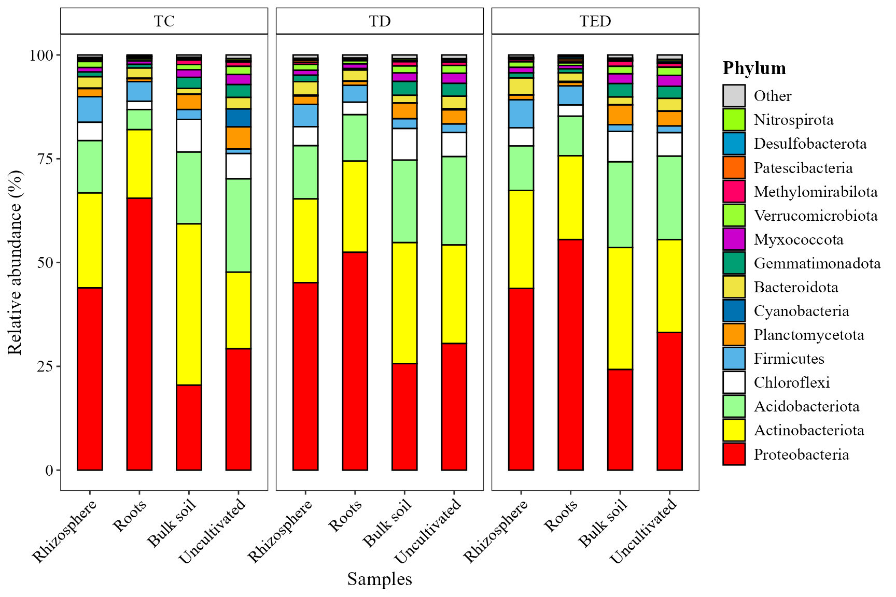
abundance_bar_plot(table = table_fung,
metadata = metadata_fungi,
x_col = "Treatment",
facet_col = "Type_of_soil",
add_remained = TRUE,
label = "Genera",
x_label_angle = 45,
save_table = FALSE)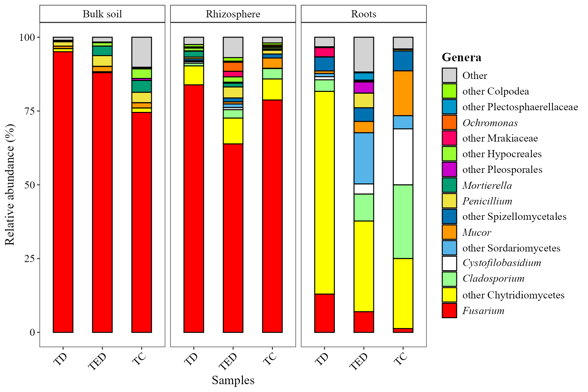
🖥️ Heatmaps de abundancia
Nota que los archivos de entrada son los mismos que en la función anterior, y esto es consistente en todas las funciones de aquí en adelante.
Los parámetros condition1, condition2 y
condition3 definen las tres variables de metadatos que se
muestran como anotaciones horizontales encima del heatmap.
Se pueden especificar paletas de color personalizadas para cada
anotación con colors_condition1,
colors_condition2 y colors_condition3,
respectivamente.
Los títulos de leyenda de estas anotaciones se pueden personalizar con
name_legend_condition1, name_legend_condition2
y name_legend_condition3.
El argumento top_n controla el número de features más
abundantes incluidos en el heatmap.
Si cluster = TRUE, las filas se agrupan jerárquicamente; si
es FALSE, los features se ordenan por abundancia relativa
decreciente.
El parámetro show_column_names determina si se muestran los
nombres de las muestras en el heatmap.
Las etiquetas de fila por defecto son solo el número de rango del
feature ("1", "2"…);
feature_prefix antepone lo que corresponda a los datos —
aquí "ASV", ya que los features de esta tabla son variantes
de secuencia de amplicón (ASV) de QIIME2/DADA2.
abundance_heatmap_plot(table = table_bac,
metadata = metadata_bacteria,
top_n = 20,
show_column_names = FALSE,
condition1 = "Type_of_soil",
condition2 = "Treatment",
feature_prefix = "ASV")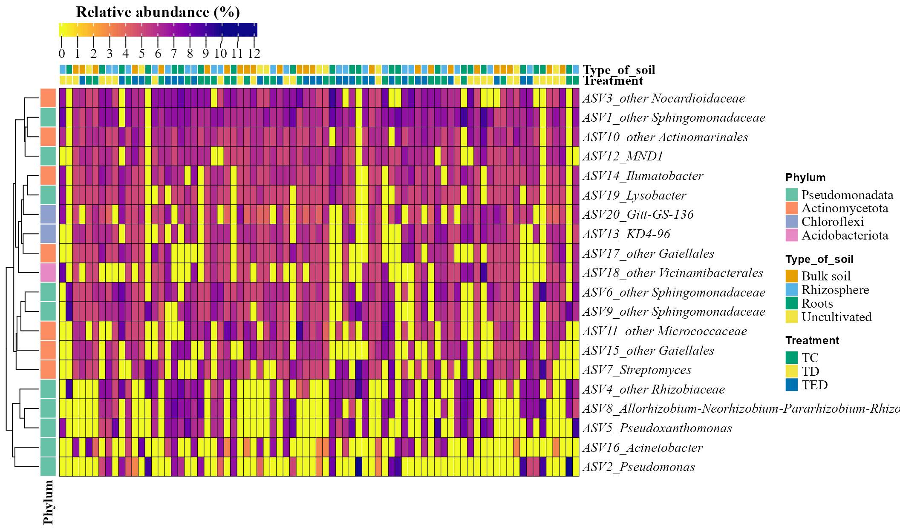
abundance_heatmap_plot(table = table_fung,
metadata = metadata_fungi,
top_n = 20,
show_column_names = FALSE,
condition1 = "Type_of_soil",
condition2 = "Treatment",
feature_prefix = "ASV")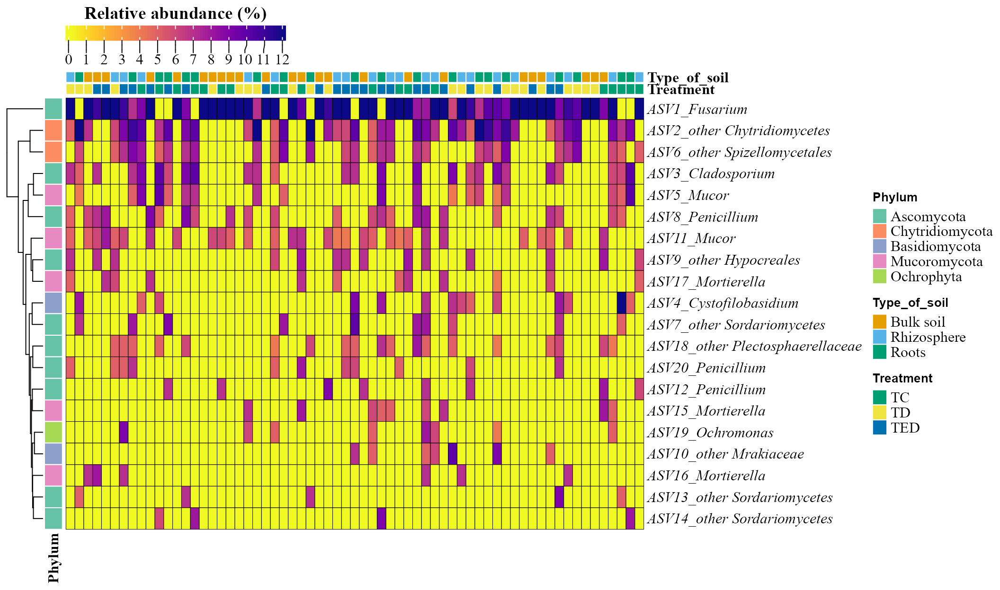
🖥️ Diagrama de Sankey del flujo taxonómico
abundance_sankey_plot() visualiza cómo fluye la
abundancia relativa a través de los rangos taxonómicos: de Reino a
Especie, como un diagrama de Sankey interactivo. Es útil para tener una
visión rápida de qué linajes dominan la comunidad.
El argumento taxRanks especifica qué rangos incluir como
nodos, maxn limita el número de taxones conservados por
rango, y taxonomy_db le indica a la función cómo están
formateadas las cadenas de taxonomía (por ejemplo, "silva",
"gg", "kraken2"). Esta función depende de networkD3,
disponible en CRAN:
install.packages("networkD3")⚠️ A diferencia de las demás funciones, esta no retorna un objeto
ggplot sino un objeto sankeyNetwork, y tiene
un parámetro (output_file) que permite guardar un
archivo HTML con un diagrama de Sankey interactivo.
sankey_bacteria <- abundance_sankey_plot(
table = table_bac,
output_file = "sankey_bacteria.html",
maxn = 15,
taxRanks = c("P", "C", "O", "F", "G"),
taxonomy_db = "silva"
)## Sankey diagram saved to: sankey_bacteria.html
sankey_bacteria📊 Diversidad alfa
La diversidad alfa describe la diversidad dentro de cada muestra
individual. Con MicroBioMeta, la diversidad alfa se puede
explorar con varias métricas distintas, como métricas clásicas tipo Chao
y Simpson. Además, el paquete implementa funciones basadas en el
marco de números de Hill, que ofrece una forma
unificada de representar distintas unidades. Los números de Hill se
parametrizan mediante el orden q, que regula el peso que se le
da a la abundancia. Por ejemplo, q=0 corresponde a la riqueza
de especies (número total de especies), q=1 al exponencial de
la entropía de Shannon (especies frecuentes), y q=2 al inverso
del índice de Simpson (especies dominantes).
📈 Correlación entre números de Hill
La función alpha_hill_corr_plot() calcula los números de
Hill para distintos órdenes (típicamente, 𝑞=0,1,2) y visualiza las
correlaciones entre ellos mediante un gráfico de correlación, evaluando
qué tan fuertemente se relacionan las métricas de diversidad de
distintos órdenes con la profundidad de secuenciación.
Este es el primer paso antes de analizar las métricas de diversidad alfa.
Para las bacterias 🦠, podemos observar que en todos los órdenes de q hay una correlación fuerte con la profundidad de secuenciación.
alpha_hill_corr_plot(table = table_bac)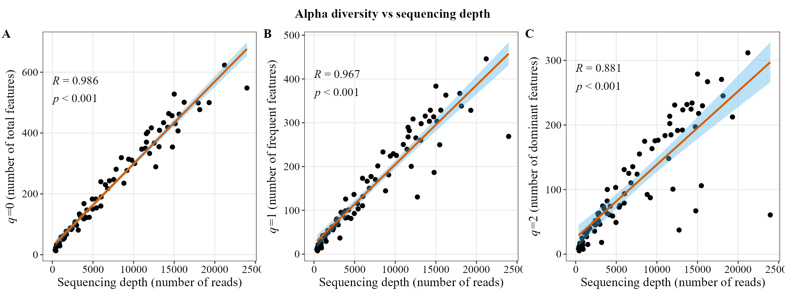
Pero, para los datos de hongos 🍄 esta correlación es fuerte y significativa solo en q=0, es decir, para riqueza, pero no para los demás órdenes de q.
alpha_hill_corr_plot(table = table_fung)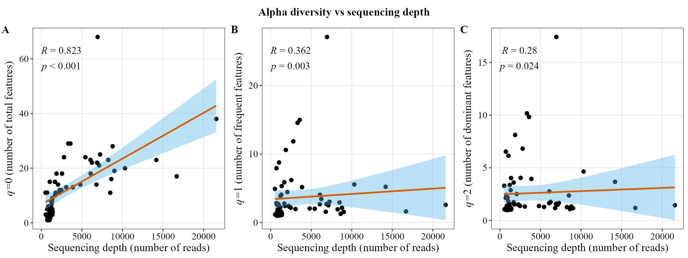
📊 Visualización de diversidad alfa
La función alpha_hill_plot() calcula los números de Hill
y visualiza los patrones de diversidad alfa entre condiciones
experimentales usando boxplots.
El parámetro x_col especifica la columna de metadatos
usada en el eje x, mientras que fill_col controla el
agrupamiento usado para colorear los boxplots.
El argumento facet_by permite dividir el gráfico según
una variable de metadatos, y facet_orientation controla si
las facetas se organizan horizontal o verticalmente.
Si save_table = TRUE, la función también retorna una
tabla con los valores de diversidad alfa calculados para cada
muestra.
alpha_hill_plot(table = table_bac,
metadata = metadata_bacteria,
x_col = "Treatment",
fill_col = "Treatment",
facet_by = "Type_of_soil",
facet_orientation = "horizontal",
save_table = FALSE)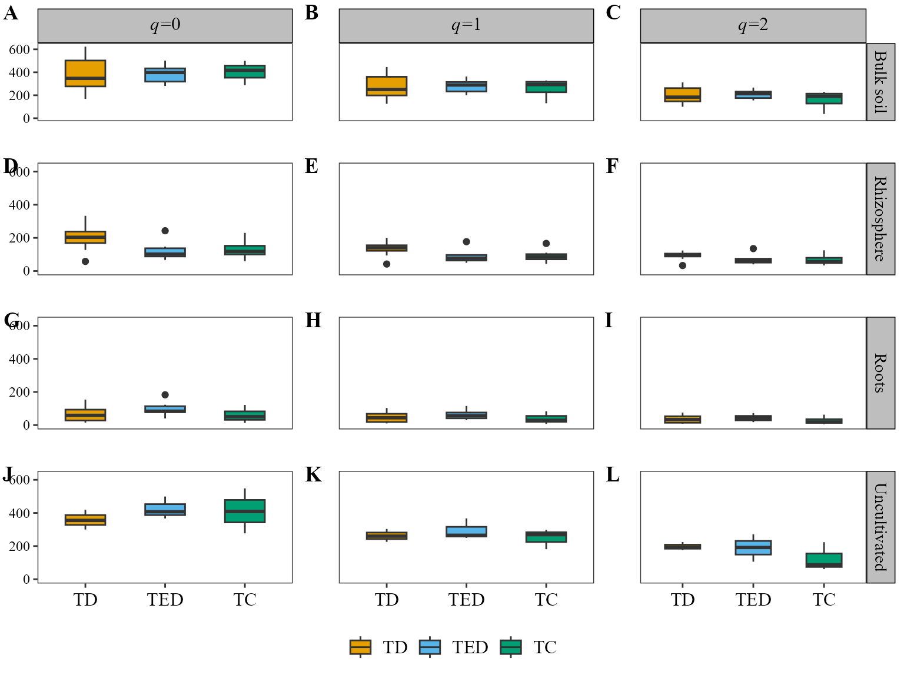
alpha_hill_plot(table = table_fung,
metadata = metadata_fungi,
x_col = "Treatment",
fill_col = "Treatment",
facet_by = "Type_of_soil",
facet_orientation = "horizontal",
save_table = FALSE)
También podemos visualizar otras métricas considerando índices clásicos de diversidad alfa:
alpha_diversity_plot(table = table_fung,
metadata = metadata_fungi,
x_col = "Treatment",
fill_col = "Treatment",
facet_by = "Type_of_soil",
facet_orientation = "horizontal",
stat = "anova",
free_y = TRUE,
save_table = FALSE)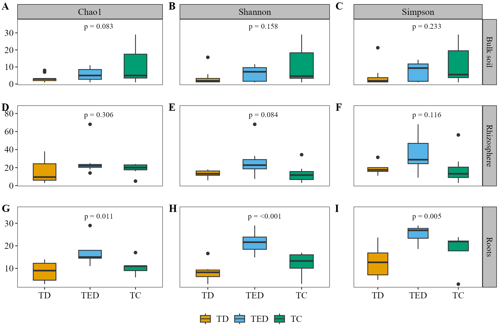
Cada panel se etiqueta automáticamente (A, B, C, …) para poder
referenciarlo. Cuando se establece stat, también se agrega
una anotación con el valor p a cada panel (por defecto Wilcoxon para dos
comparaciones y Kruskal-Wallis para tres comparaciones); podemos indicar
el método a usar con stat, tal como la función
stat_compare_means() de ggpubr.
panel_label_case alterna entre etiquetas en mayúsculas y
minúsculas, panel_label_bold para etiquetas en negritas, y
panel_labels te permite dar etiquetas personalizadas (por
ejemplo c("(a)", "(b)", "(c)")) en vez de las generadas
automáticamente. free_y permite que cada panel use su
propia escala del eje y en vez de una compartida, como abajo:
alpha_diversity_plot(table = table_fung,
metadata = metadata_fungi,
x_col = "Treatment",
fill_col = "Treatment",
facet_by = "Type_of_soil",
facet_orientation = "horizontal",
stat = "anova",
free_y = TRUE,
x_label_angle = 45,
panel_label_bold = FALSE,
save_table = FALSE)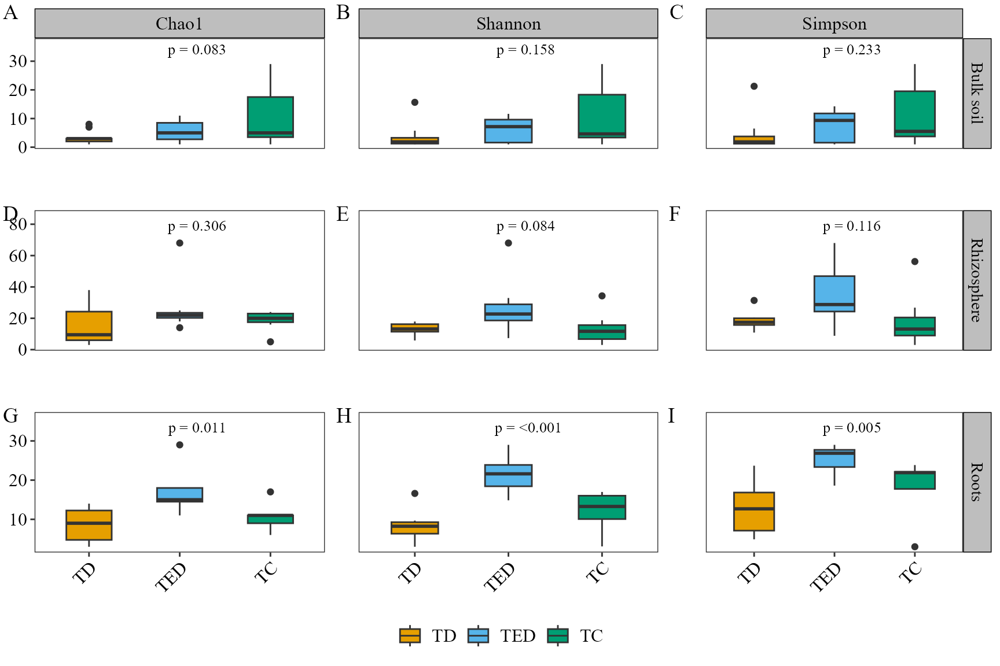
Diversidad alfa a lo largo de un gradiente continuo
alpha_decay_plot() hace una regresión de los números de
Hill contra una variable continua de los metadatos (por
ejemplo, pH, elevación, distancia). Cada orden de Hill (q=0, 1,
2) tiene su propio panel con una línea de regresión y una anotación con
el coeficiente de correlación (rho de Spearman por defecto), su valor p,
y cuando show_lm_stats = TRUE, la R² y la pendiente del
modelo lineal.
El parámetro cont_var nombra la columna continua de
metadatos a ubicar en el eje x, y el argumento opcional
group_col ajusta una línea de regresión separada por grupo
en vez de una sola línea global.
Aquí usamos el pH del suelo como gradiente, restringido
a Bulk soil y Rhizosphere para una comparación
más limpia:
metadata_bacteria_decay <- metadata_bacteria %>%
filter(Type_of_soil %in% c("Bulk soil", "Rhizosphere"))
alpha_decay_plot(table = table_bac,
metadata = metadata_bacteria_decay,
cont_var = "pH",
group_col = "Type_of_soil",
x_axis_title = "Soil pH")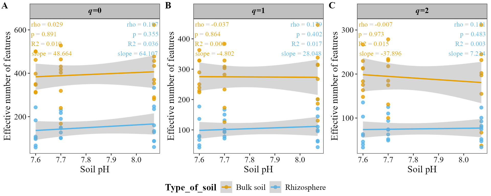
💻 Taxones compartidos entre grupos de muestras
Otra forma de explorar los patrones de diversidad alfa es examinando
qué taxones son compartidos o exclusivos entre grupos de
muestras. La función venn_plot() genera diagramas
de Venn que resumen el traslape de taxones entre los grupos definidos en
los metadatos.
Generamos un diagrama de Venn agrupando muestras según el compartimento de suelo.
venn_plot(table = table_fung,
metadata = metadata_fungi,
merge_by = "Type_of_soil",
min_prevalence = 0 )💻 Colapsar la tabla por nivel taxonómico
Las tablas de comunidades microbianas suelen generarse a nivel de ASV u OTU, lo que puede resultar en cientos o miles de features. Para la interpretación y visualización, suele ser útil agrupar estos features en un nivel taxonómico superior, como género.
La función collapse_table() realiza esta agregación
agrupando los features que están en el mismo nivel de taxonomía y
sumando sus conteos.
La función retorna una lista con dos elementos:
collapsed_table: una tabla de abundancia en formato ancho, donde las filas corresponden a los taxones colapsados en el nivel seleccionado y las columnas corresponden a las muestras.long_format: la misma información en formato largo, útil para graficación o análisis estadísticos posteriores.Por ejemplo, el siguiente código colapsa la tabla de abundancia de hongos al nivel de género y hacemos un diagrama de Venn para visualizar los géneros compartidos.
table_genus <- collapse_table(
table = table_fung,
metadata = metadata_fungi,
level = "genus"
)
venn_plot(
table = table_genus$collapsed_table,
metadata = metadata_fungi,
merge_by = "Type_of_soil"
)
Por defecto, collapse_table() retorna los
conteos crudos sumados en el nivel taxonómico
seleccionado. Sin embargo, los datos de comunidades microbianas suelen
necesitar visualizarse o analizarse como abundancia
relativa. Al establecer rel_abun = TRUE, los
conteos de cada muestra se convierten en porcentajes,
donde la abundancia total por muestra suma 100%.
🖥️ Filtrar taxones por prevalencia
A veces es útil visualizar solo los taxones que ocurren
frecuentemente dentro de cada grupo. Esto se puede hacer usando el
parámetro min_prevalence.
Por ejemplo, el siguiente diagrama incluye solo los taxones presentes en al menos el 20% de las muestras dentro de cada grupo. El parámetro es 0 por defecto, lo que significa que no se aplica ningún filtro.
venn_plot(table = table_fung,
metadata = metadata_fungi,
merge_by = "Type_of_soil",
min_prevalence = 0.2 )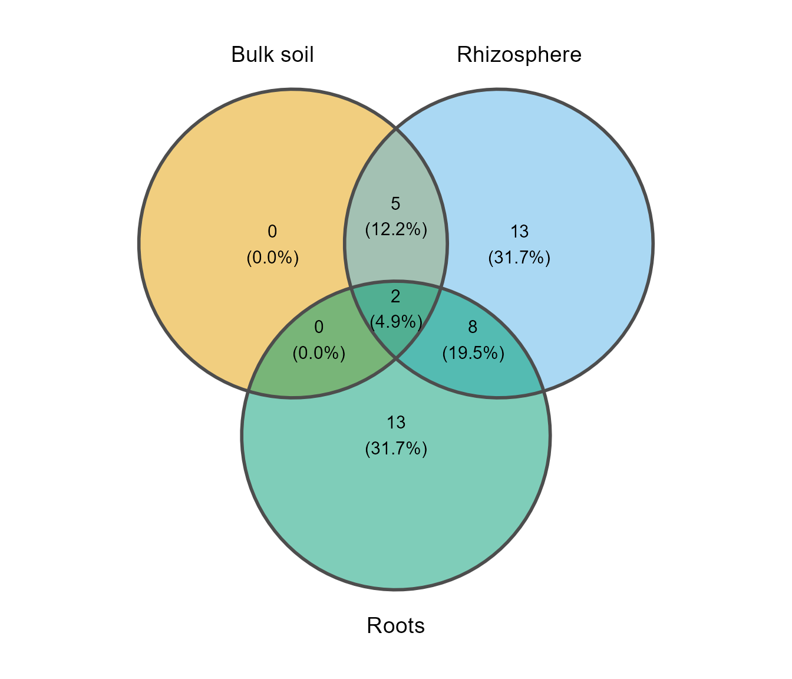
🖥️ Personalizar los colores de los grupos
La función también permite colores personalizados para los grupos.
venn_plot(table = table_fung,
metadata = metadata_fungi,
merge_by = "Type_of_soil",
min_prevalence = 0,
group_colors = c("#1B9E77", "#D95F02", "#7570B3") )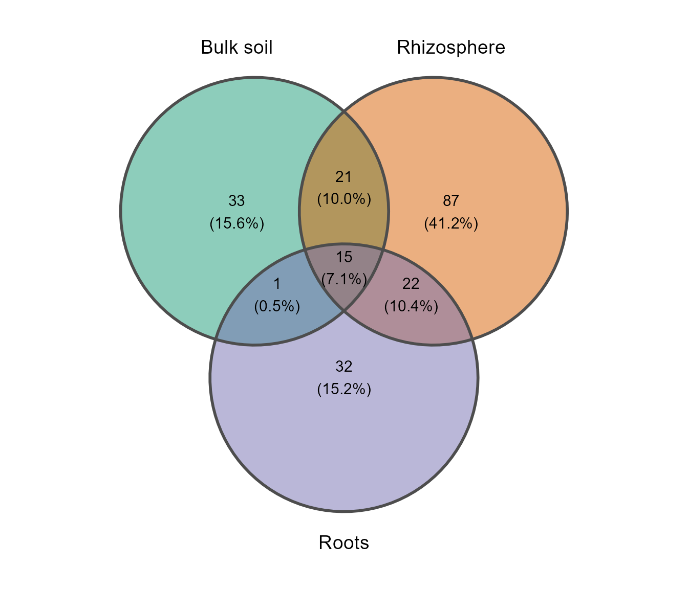
🖥️ Método de graficación alternativo
Por defecto la función usa el paquete ggvenn, pero también puede generar el diagrama usando ggVennDiagram.
venn_plot(table = table_fung,
metadata = metadata_fungi,
merge_by = "Type_of_soil",
method = "ggvenndiagram" )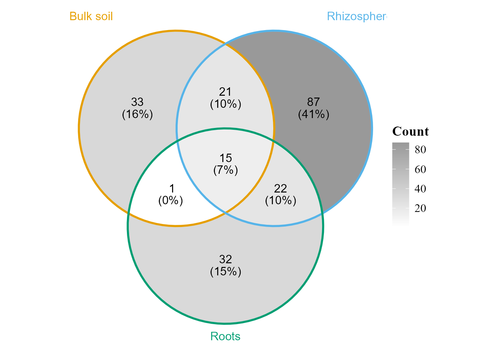
💻 Diversidad beta
La diversidad beta describe las diferencias en la composición y estructura de la comunidad entre muestras. Estos análisis ayudan a determinar si las comunidades microbianas varían según las condiciones ambientales, los tratamientos o los grupos experimentales, y cómo se agrupan o se separan.
MicroBioMeta tiene varias funciones para explorar la
diversidad beta, incluyendo gráficos de ordenación, pruebas estadísticas
de diferencias entre comunidades, y enfoques de partición que separan
los componentes compartidos y exclusivos de la diversidad. Estas
funciones permiten tanto la exploración visual como pruebas de hipótesis
formales.
🖥️ Ordenación de la composición de la comunidad
La función beta_ord_plot() calcula las disimilitudes
pareadas entre muestras y visualiza los resultados usando un método de
ordenación. Por defecto, la función usa métricas de distancia ecológicas
comunes (por ejemplo, Bray–Curtis o Euclidiana) y técnicas de reducción
de dimensionalidad como PCoA, PCA o
NMDS. Para tener en cuenta la naturaleza composicional
de los datos, en los ejemplos se usan las distancias
aitchinson y compositional. Compositional usa
la transformación clr (log del cociente centrado) implementada
por el paquete ALDEx2.
El parámetro group_col especifica la columna de
metadatos usada para colorear las muestras, mientras que
shape_col permite mostrar una variable adicional de
metadatos usando distintas formas de punto.
El argumento distance define la métrica de disimilitud
usada para calcular la diversidad beta (por ejemplo, bray,
jaccard, aitchsion, etc.), y ordination (opciones:
PCA, PCoA o NMDS) especifica el método
de ordenación aplicado para visualizar las distancias entre
muestras.
beta_ord_plot(table = table_bac,
metadata = metadata_bacteria,
distance = "compositional",
ordination = "PCA",
group_col = "Type_of_soil",
shape_col = "Treatment")
beta_ord_plot(table = table_fung,
metadata = metadata_fungi,
group_col = "Type_of_soil",
shape_col = "Treatment",
distance = "compositional",
ordination = "PCA")## no conditions provided: forcing denom = 'all'## no conditions provided: forcing conds = 'NA'## conditions vector supplied## operating in serial mode## computing center with all features## Coordinate system already present.
## ℹ Adding new coordinate system, which will replace the existing one.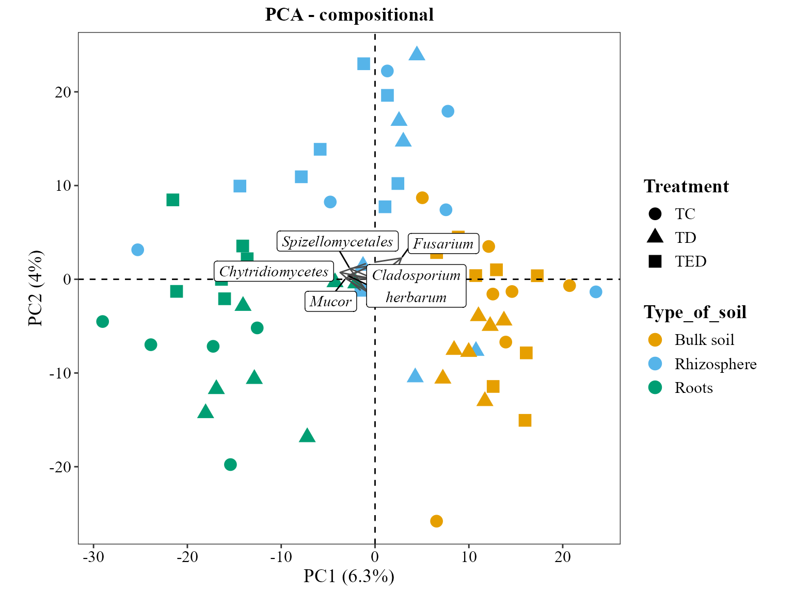
🖥️ Pruebas estadísticas para diversidad beta
La función beta_test_table() realiza pruebas
estadísticas para evaluar si la composición de la comunidad difiere
entre grupos experimentales.
El argumento formula_str especifica el diseño
experimental usando una sintaxis de fórmula similar a la de los modelos
lineales en R, o como se usa en el paquete vegan. El
parámetro method define la métrica de distancia usada para
calcular las disimilitudes, y el argumento test especifica
la prueba estadística (opciones: PERMANOVA o
BETADISPER).
El parámetro permutations determina el número de
permutaciones usadas para estimar la significancia estadística.
strata_var se usa, como en el paquete vegan,
para bloquear un parámetro.
⚠️ NOTA: Cada función tiene la opción save_* que exporta una tabla o un elemento obtenido en cada función.
method se establece en compositional para
ambos conjuntos de datos, coincidiendo con el PCA de cada uno arriba, de
modo que la prueba de significancia evalúa la misma noción de
disimilitud que se muestra en el gráfico.
beta_test_table(table = table_bac,
metadata= metadata_bacteria,
formula_str = "Type_of_soil*Treatment",
method = "compositional",
test = "permanova",
permutations = 999)## no conditions provided: forcing denom = 'all'## no conditions provided: forcing conds = 'NA'## conditions vector supplied## operating in serial mode## computing center with all features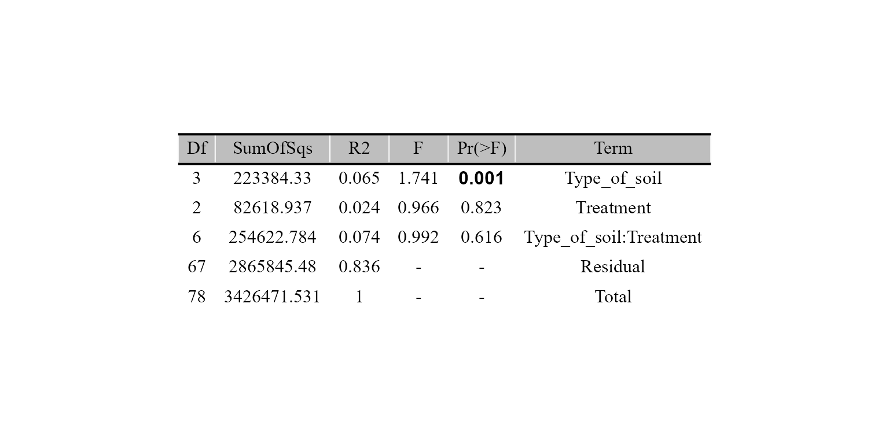
beta_test_table(table = table_fung,
metadata= metadata_fungi,
formula_str = "Type_of_soil*Treatment",
method = "compositional",
test = "permanova",
permutations = 999)## no conditions provided: forcing denom = 'all'## no conditions provided: forcing conds = 'NA'## conditions vector supplied## operating in serial mode## computing center with all features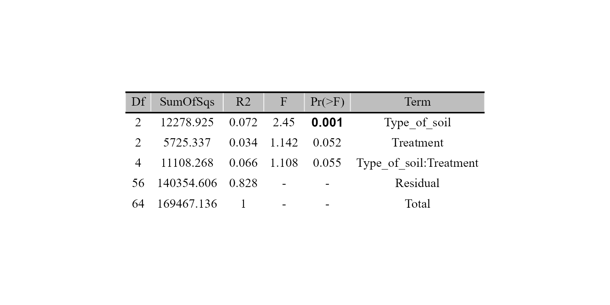
💻 Partición de la diversidad beta
La diversidad beta también puede descomponerse en distintos
componentes. La función beta_partition_ord_plot() divide la
diversidad beta en los componentes de recambio (turnover) y
anidamiento (nestedness) según índices de disimilitud
seleccionados.
El argumento index especifica la familia de índices de
disimilitud usada para la partición (por ejemplo, Jaccard o Sørensen).
Los parámetros group_col y shape_col definen
cómo se visualizan las muestras según variables de metadatos.
beta_partition_ord_plot(
table = table_bac,
metadata = metadata_bacteria,
index = "jaccard",
group_col = "Type_of_soil",
shape_col = "Treatment",
save_table = FALSE)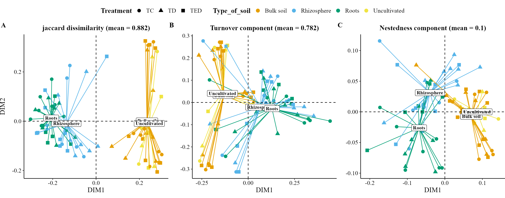
beta_partition_ord_plot(
table = table_fung,
metadata = metadata_fungi,
index = "jaccard",
group_col = "Type_of_soil",
shape_col = "Treatment",
save_table = FALSE)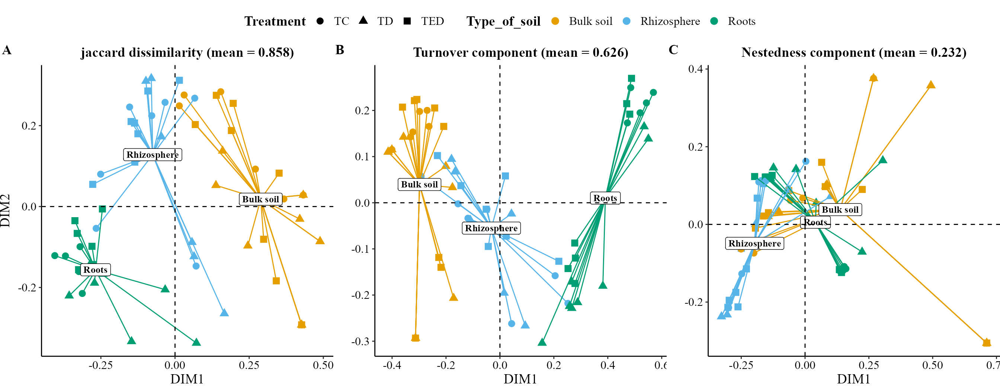
🖥️ Visualización pareada de diversidad beta
La función beta_dissimilarity_plot() resume los valores
pareados de diversidad beta usando boxplots, permitiendo comparar los
patrones de diversidad entre grupos de muestras. Esta función usa
betapart sobre datos de incidencia (presencia/ausencia),
con el índice de Sørensen o Jaccard: shared, turnover o nestedness.
Los parámetros condition1_col y
condition2_col especifican las variables de metadatos
usadas para definir los grupos que se comparan. El argumento
partition determina qué componente de la diversidad beta se
muestra (por ejemplo, compartido o exclusivo), mientras que
family define el índice de disimilitud usado.
Por defecto, beta_dissimilarity_plot() conserva todas
las combinaciones pareadas posibles de condition1_col,
incluyendo un grupo comparado consigo mismo (por ejemplo
"Roots_vs_Roots"). El argumento
comparison_condition1 restringe el gráfico a etiquetas
específicas "value1_vs_value2" (los dos valores ordenados
alfabéticamente y unidos con "*_vs_*"). Aquí construimos
esa lista programáticamente para conservar solo las comparaciones de
cada otro compartimento contra Roots, descartando las
autocomparaciones:
groups_bac <- setdiff(unique(as.character(metadata_bacteria$Type_of_soil)), "Roots")
vs_roots_bac <- paste0(pmin(groups_bac, "Roots"), "_vs_", pmax(groups_bac, "Roots"))
vs_roots_bac## [1] "Rhizosphere_vs_Roots" "Bulk soil_vs_Roots" "Roots_vs_Uncultivated"Igual que en los gráficos de diversidad alfa,
x_label_angle rota las etiquetas del eje x (por defecto
0), strip_text_bold activa/desactiva las
negritas de los títulos de faceta (por defecto FALSE), y
aspect_ratio fija la relación alto/ancho del panel. Igual
que en los gráficos alfa, stat (por ejemplo
"wilcox.test", "kruskal.test",
"anova") agrega una comparación estadística entre los
boxplots, pasada directamente a
ggpubr::stat_compare_means().
Si save_table = TRUE, la función también retorna una
tabla con los valores de diversidad beta usados para generar el
gráfico.
beta_dissimilarity_plot(table = table_bac,
metadata = metadata_bacteria,
comparison_condition1 = vs_roots_bac,
condition1_col = "Type_of_soil",
condition2_col = "Treatment",
x_axis_title = "Samples",
x_label_angle = 45,
stat = "kruskal.test",
partition = "shared",
family = "jaccard",
save_table = FALSE)
groups_fung <- setdiff(unique(as.character(metadata_fungi$Type_of_soil)), "Roots")
vs_roots_fung <- paste0(pmin(groups_fung, "Roots"), "_vs_", pmax(groups_fung, "Roots"))
beta_dissimilarity_plot(table = table_fung,
metadata = metadata_fungi,
comparison_condition1 = vs_roots_fung,
condition1_col = "Type_of_soil",
condition2_col = "Treatment",
x_axis_title = "Samples",
x_label_angle = 45,
stat = "kruskal.test",
partition = "shared",
family = "jaccard",
save_table = FALSE)
🖥️ Recambio pareado (turnover): entre grupos vs. dentro del grupo
beta_turnover_plot() reporta el componente de recambio
(ASV turnover) de la diversidad beta basada en números de Hill
(q=0, 1, 2), con una fila de faceta por orden de Hill.
beta_turnover_plot() responde una pregunta distinta a la
de beta_dissimilarity_plot(): para un grupo de
referencia (por ejemplo, Rhizosphere), ¿es su recambio
contra otro grupo (por ejemplo, Roots, una comparación
entre grupos) mayor que su recambio contra sí mismo
(pares Rhizosphere-vs-Rhizosphere, una línea base dentro del grupo)? Si
el recambio entre grupos es significativamente mayor, eso es evidencia
de que los dos compartimentos realmente albergan comunidades distintas,
más allá de la variabilidad ya presente entre réplicas del mismo
compartimento.
Así que el gráfico de abajo tiene una franja morada arriba (este color se puede configurar) etiquetada “Rhizosphere”, el grupo de referencia fijo en ambas comparaciones y, dentro de ella, dos cajas: “Roots” (Rhizosphere vs. Roots, entre grupos) y “Rhizosphere” (Rhizosphere vs. Rhizosphere, dentro del grupo). Que la franja y la caja “Rhizosphere” tengan la misma etiqueta es intencional, no un duplicado, la franja nombra la referencia, la caja nombra contra qué se está comparando (contra sí misma, en ese caso).
comparison_condition1 selecciona qué combinaciones
"valor1_vs_valor2" conservar, siempre con el grupo de
referencia (Rhizosphere) primero.
comparison_condition2 conserva solo los pares del mismo
tratamiento, para que el recambio no se confunda al comparar muestras de
tratamientos distintos.
color_facets_x colorea la franja de faceta superior
(condition1.x) y color_axis_x colorea las dos
cajas (condition1.y). Las etiquetas del eje están ocultas
por defecto ya que los grupos ya están identificados en la leyenda.
Establece show_x_labels = TRUE para mostrarlas de nuevo.
stat agrega una comparación estadística entre las dos
cajas.
beta_turnover_plot(
table = table_fungi,
metadata = metadata_fungi,
comparison_condition1 = c("Rhizosphere_vs_Roots", "Rhizosphere_vs_Rhizosphere"),
comparison_condition2 = c("TC_vs_TC", "TD_vs_TD", "TED_vs_TED"),
condition1.x = "Type_of_soil.x",
condition1.y = "Type_of_soil.y",
condition2.x = "Treatment.x",
condition2.y = "Treatment.y",
color_facets_x = "#5D478B",
color_axis_x = c("Roots" = "#56B4E9", "Rhizosphere" = "#E69F00"),
stat = "wilcox.test"
)$plot
💻 Decaimiento de la similitud comunitaria con la distancia
La función beta_decay_plot() evalúa si las comunidades
geográficamente más cercanas también son más similares en composición.
Calcula la disimilitud comunitaria pareada (distance, por
ejemplo "jaccard", "bray",
"horn") y las distancias geográficas pareadas a partir de
las coordenadas de las muestras, corre una prueba de Mantel entre ambas,
y grafica la similitud (1 − disimilitud) contra la distancia con una
línea de regresión ajustada.
lat_col/lon_col nombran las columnas de
latitud/longitud en metadata (en grados decimales), y el
argumento opcional group_col corre una prueba de Mantel y
una línea de regresión separadas por grupo, en vez de una sola prueba
global.
Construimos datos de ejemplo para esta parte:
loc_coords <- data.frame(
Loc = 0:8,
lat = 19.0 + seq(0, 0.8, length.out = 9),
lon = -99.0 + seq(0, 0.8, length.out = 9)
)
metadata_bacteria$lat <- loc_coords$lat[match(metadata_bacteria$Loc, loc_coords$Loc)]
metadata_bacteria$lon <- loc_coords$lon[match(metadata_bacteria$Loc, loc_coords$Loc)]
#filtrando uncultivated
metadata_bacteria_decay <- metadata_bacteria %>%
filter(Type_of_soil != "Uncultivated")
beta_decay_plot(
table = table_bac,
metadata = metadata_bacteria_decay,
lat_col = "lat",
lon_col = "lon",
distance = "jaccard",
group_col = "Type_of_soil"
)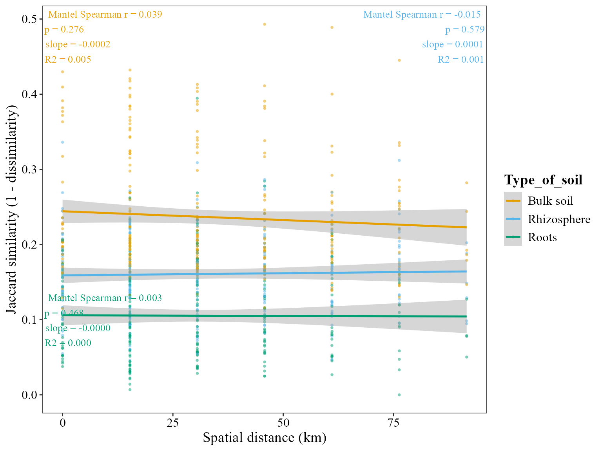
📊 Análisis de abundancia diferencial
MicroBioMeta tiene varias funciones para explorar
taxones diferencialmente abundantes. Estos análisis
ayudan a identificar features microbianos que varían significativamente
entre grupos experimentales.
Dos funciones se apoyan en un marco de análisis de datos composicionales implementado en el paquete ALDEx2. Este enfoque tiene en cuenta la naturaleza composicional de los datos de secuenciación usando instancias de Monte Carlo Dirichlet y transformaciones log-razón centradas, y en el paquete ANCOMBC2, un método alternativo de abundancia diferencial que modela explícitamente el sesgo composicional y los ceros estructurales.
Las funciones:
aldex_volcano_plot()visualiza los resultados de abundancia diferencial usando un volcano plot.aldex_heatmap_plot()visualiza los taxones significativos en un heatmap.ancombc_plot()retorna un gráfico de barras (cuando hay 2 grupos) y un heatmap (cuando hay 3 o más grupos).
Adicionalmente, dos enfoques complementarios ayudan a identificar taxones importantes que discriminan entre grupos:
ratios_bubble_plot()visualiza taxones basándose en diferencias log-razón entre condiciones.random_forest_lollipop_plot()usa un modelo Random Forest para identificar los features que mejor predicen una variable o condición dada, visualizado como un gráfico de lollipop de importancia de features.
📊 Ejemplo: datos de bacterias
Primero, filtramos los metadatos para conservar solo dos compartimentos de suelo y aplicar ALDEx2.
metadata_bacteria_compar <- metadata_bacteria %>%
filter(Type_of_soil == "Roots" | Type_of_soil =="Rhizosphere")
table_bacteria_compar <- table_bacteria[match(metadata_bacteria_compar$SAMPLEID, colnames(table_bacteria))]
table_bac_compar <- merge_feature_taxonomy(table_bacteria_compar, taxonomy_bacteria)## Warning in merge_feature_taxonomy(table_bacteria_compar, taxonomy_bacteria): 83
## taxonomy IDs are not present in the table and will be excluded from the result.Podemos visualizar la abundancia diferencial usando un
volcano plot. Los taxones significativos se etiquetan
con su nombre; label_size controla el tamaño de fuente de
estas etiquetas, y filter_uncultured = TRUE descarta los
taxones “uncultured”/“unculture” de las etiquetas (aunque igual se
grafican como puntos, solo no se etiquetan).
aldex_volcano_plot(table = table_bac_compar,
metadata = metadata_bacteria_compar,
col_cond = "Type_of_soil",
type = "volcano",
label_size = 3,
filter_uncultured = TRUE )
📊 ANCOMBC2 como método alternativo
ancombc_plot() ofrece una alternativa a las funciones
basadas en ALDEx2 de arriba. Esta función depende de los paquetes de
Bioconductor ANCOMBC y phyloseq:
tax_level agrupa la tabla a un rango taxonómico antes de
la prueba (por defecto "Genus"), y
p_adj_method/prv_cut controlan la corrección
por pruebas múltiples y el filtro de prevalencia.
⚠️ Con un prv_cut bajo, los taxones raros o dispersos
pueden disparar un error
"Zero variances have been detected..." en el paso interno
de corrección de sesgo de ANCOMBC2 en algunas corridas (no siempre
ocurre, depende de qué taxones conserve la iteración de bootstrap en
turno). Subir prv_cut filtra esos taxones dispersos antes
de la prueba y evita el error.
ancombc_plot(
table = table_bac_compar,
metadata = metadata_bacteria_compar,
col_cond = "Type_of_soil",
tax_level = "Genus",
prv_cut = 0.3,
p_adj_method = "BH"
)
📊 Ejemplo: datos de hongos
Seguimos el mismo procedimiento, pero visualizamos los resultados con
un heatmap. Esta función usa
ComplexHeatmap.
metadata_fungi_compar <- metadata_fungi %>%
filter(Type_of_soil == "Bulk soil" | Type_of_soil =="Rhizosphere")
table_fungi_compar <- table_fung[match(metadata_fungi_compar$SAMPLEID, colnames(table_fung))]
table_fung_compar <- merge_feature_taxonomy(table_fungi_compar, taxonomy_fungi)## Warning in merge_feature_taxonomy(table_fungi_compar, taxonomy_fungi): 17
## taxonomy IDs are not present in the table and will be excluded from the result.
aldex_heatmap_plot(table = table_fung_compar,
metadata = metadata_fungi_compar,
col_cond = "Type_of_soil")
📊 Identificando taxones importantes
Las funciones random_forest_lollipop_plot() y
ratios_bubble_plot() también se pueden usar para resaltar
los taxones que más contribuyen a las diferencias observadas entre
condiciones.
Por ejemplo, un modelo Random Forest puede usarse para identificar los taxones que mejor predicen el compartimento de suelo:
random_forest_lollipop_plot(
table = table_bac,
metadata = metadata_bacteria,
top_n = 10,
variable_to_predict = "Type_of_soil")## Warning in random_forest_lollipop_plot(table = table_bac, metadata = metadata_bacteria, : Note: Some bacterial phylum names have been updated to match NCBI's revised taxonomy:
## - 'Proteobacteria' changed to 'Pseudomonadota'
## - 'Actinobacteriota' changed to 'Actinomycetota'
## Reference: https://ncbiinsights.ncbi.nlm.nih.gov/2021/12/10/ncbi-taxonomy-prokaryote-phyla-added/
Alternativamente, los taxones con las diferencias log-razón más fuertes entre dos condiciones pueden visualizarse con:
ratios_bubble_plot(table = table_fung_compar,
metadata = metadata_fungi_compar,
condition_col = "Type_of_soil",
top_n = 20,
condition_A = "Rhizosphere",
condition_B = "Bulk soil")
💻 Análisis ambientales
MicroBioMeta ofrece dos funciones para explorar la
relación entre variables ambientales y la
composición de la comunidad microbiana:
corr_env_abund_plot()— calcula correlaciones entre la abundancia taxonómica y variables ambientales.cca_rda_biplot()— realiza una ordenación restringida usando Análisis de Correspondencia Canónica (CCA) o Análisis de Redundancia (RDA).
🖥️ Preparando la tabla ambiental
Las variables ambientales deben organizarse en un data frame donde las filas corresponden a las muestras y las columnas a las variables ambientales.
env_table_fung <- metadata_fungi %>%
dplyr::select(SAMPLEID, pH:Arbus_per) %>%
remove_rownames() %>%
column_to_rownames(var = "SAMPLEID")🖥️ Correlación entre variables ambientales y abundancia taxonómica
La función corr_env_abund_plot() calcula correlaciones
entre variables ambientales y abundancias
relativas taxonómicas en un nivel taxonómico seleccionado, y
retorna un heatmap de correlación que muestra cómo se
relacionan las variables ambientales con las abundancias
taxonómicas.
Ejemplo usando abundancias a nivel de phylum:
corr_env_abund_plot(table = table_fung,
env_table = env_table_fung,
metadata = metadata_fungi,
level = "phylum",
save_table = FALSE)
🖥️ Visualización alternativa
Las correlaciones también pueden mostrarse usando marcadores circulares en vez de celdas:
corr_env_abund_plot(table = table_fung,
env_table = env_table_fung,
metadata = metadata_fungi,
level = "phylum",
save_table = FALSE,
geom = "circle")
🖥️ Ordenación restringida (CCA / RDA)
La función cca_rda_biplot() realiza un análisis de
ordenación restringida para evaluar cómo las variables ambientales
explican la variación en la composición de la comunidad microbiana.
Antes de correr el análisis, asegúrate de que el orden de las muestras en la tabla ambiental coincida con el de los metadatos:
env_table_fung <- env_table_fung[
match(metadata_fungi$SAMPLEID, rownames(env_table_fung)), , drop = FALSE]scale_arrows es un parámetro que te ayuda a visualizar
mejor los vectores ambientales:
cca_rda_biplot(table = table_fung,
env_data = env_table_fung,
metadata = metadata_fungi,
env_vars = c("pH","TN","WHC", "EC", "Clay"),
analysis = "RDA",
show_all_env_vectors = TRUE,
group_col = "Type_of_soil",
scale_arrows = 3)##
## Some constraints or conditions were aliased because they were redundant. This
## can happen if terms are constant or linearly dependent (collinear): 'WHC',
## 'EC', 'Clay'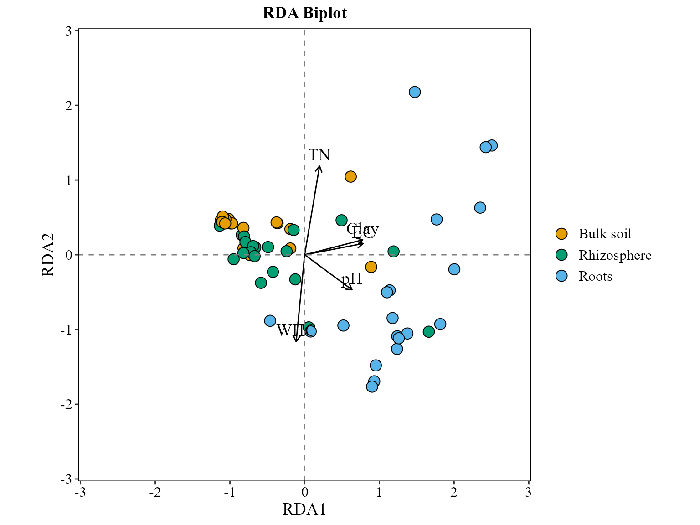
Este análisis produce un biplot donde:
Los puntos representan muestras
Los colores indican los grupos de muestras definidos en los metadatos.
Las flechas representan las variables ambientales y su dirección de influencia sobre la estructura de la comunidad.
Los vectores ambientales que apuntan en direcciones similares indican asociaciones positivas, mientras que los vectores que apuntan en direcciones opuestas sugieren relaciones negativas